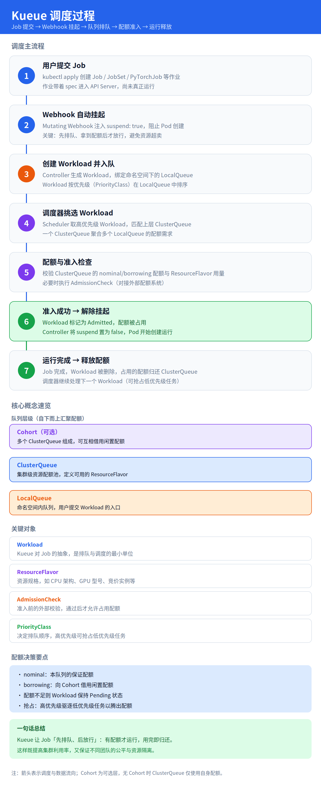
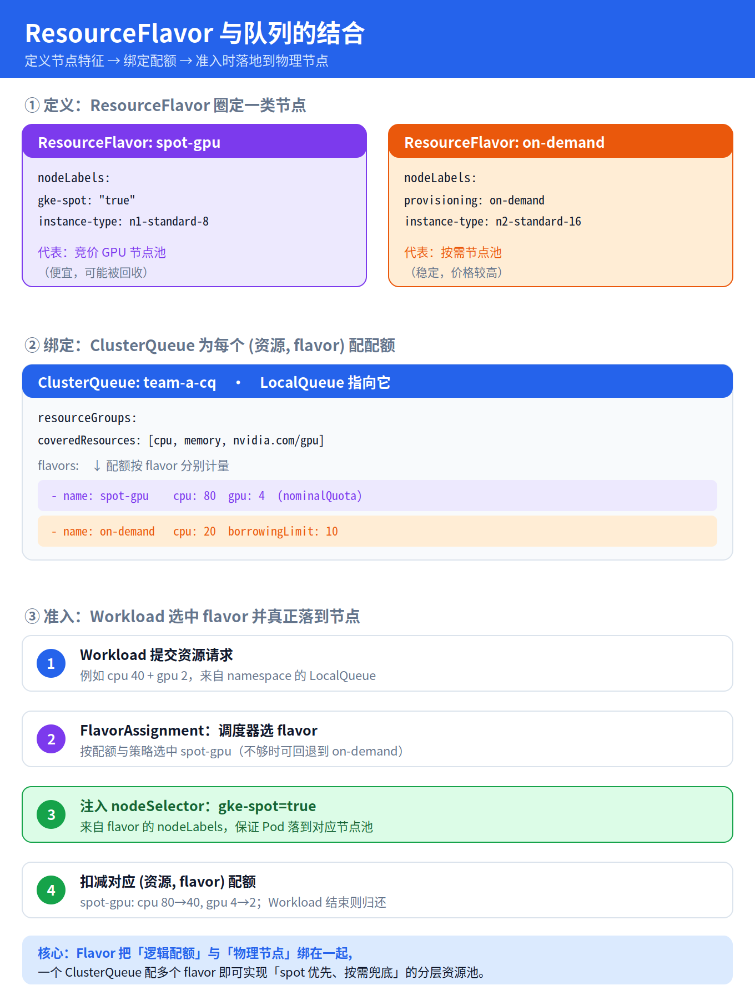
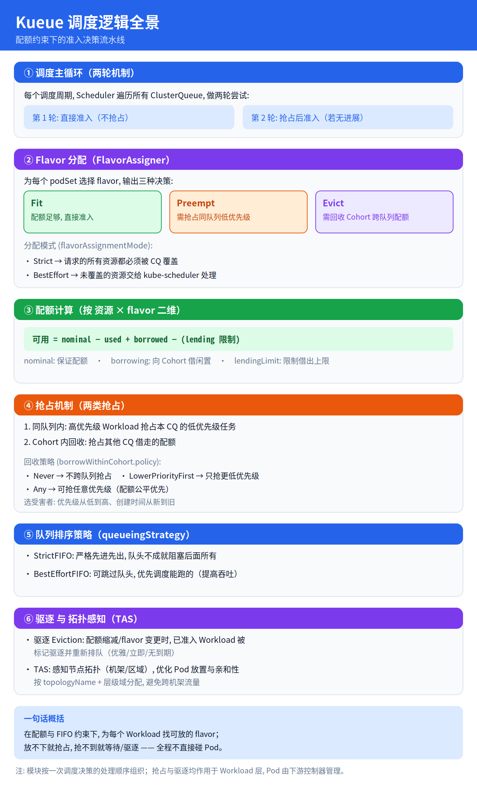
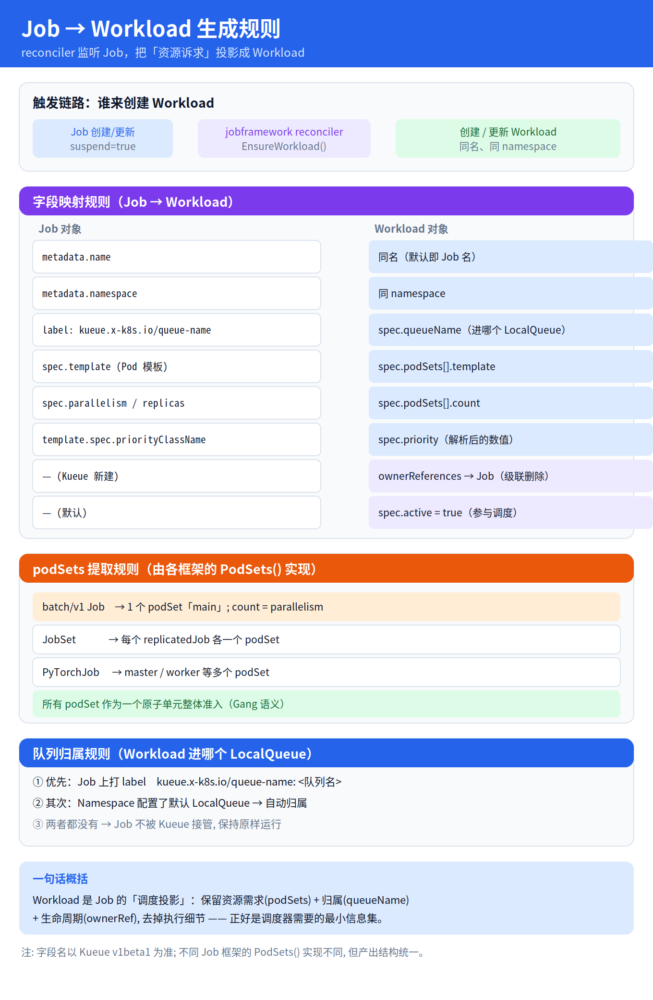
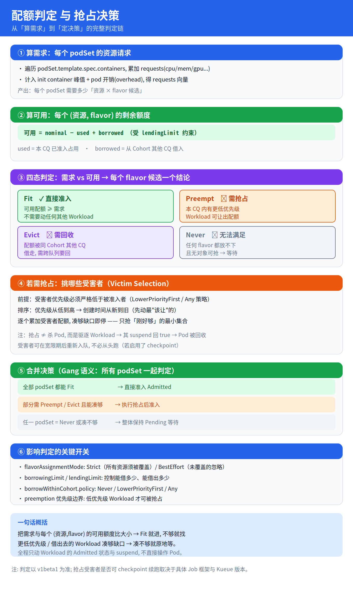
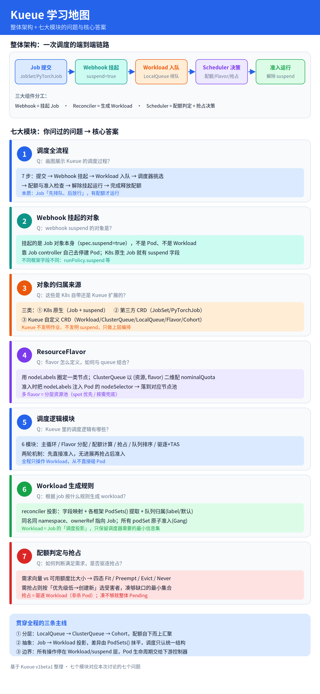

摘要
Kueue 是 Kubernetes 原生的作业队列管理系统，通过“先排队、后放行”的配额准入机制，让批处理、HPC、AI/ML 作业在多租户集群中公平、高效地共享资源。本指南系统梳理 Kueue 的调度全流程、核心对象、配额模型、调度逻辑、Workload 生成规则、抢占判定机制，补充动手实战、进阶特性与生产排障，并汇总基于公开资料整理的经典面试题目，帮助读者建立从概念到实践的完整认知框架。
本指南基于 Kueue v1beta1 / v1beta2 API 整理；TAS、DRA、Topology Spreading 等新特性以较新版本（v0.14+ 起）为准，文中已标注各特性的成熟度。
1. 整体架构与调度流程
1.1 一句话理解 Kueue
Kueue 的本质是准入控制（Admission Control）：Job 提交时先被“冻住”，只有当调度器确认有配额（自身的或从 Cohort 借来的）后才放行运行，用完即归还。这样既提高集群利用率，又保证多团队之间的公平性与资源隔离。
它不替代 kube-scheduler、Cluster Autoscaler 或 Job Controller——Kueue 决定“何时允许创建 Pod”，kube-scheduler 仍负责“把 Pod 放到哪个节点”。官方明确的设计原则是：避免重复 Kubernetes 已有组件的成熟功能——弹性伸缩交给 cluster-autoscaler，Pod 到节点的调度交给 kube-scheduler，作业生命周期交给 controller manager，高级准入策略（如 OPA/Gatekeeper）可外部委托。
1.2 调度全流程（7 步）
- 用户提交 Job：通过 kubectl 创建 Job / JobSet / PyTorchJob 等作业，作业带着 spec 进入 API Server，但尚未真正运行。
- Webhook 自动挂起：Mutating Webhook 注入
suspend: true，阻止 Pod 创建。关键是“先排队、拿到配额后才放行”，避免资源超卖。 - 创建 Workload 并入队：Controller 生成 Workload，绑定命名空间下的 LocalQueue；Workload 按优先级（PriorityClass）在 LocalQueue 中排序。
- 调度器挑选 Workload：Scheduler 取高优先级 Workload，匹配上层 ClusterQueue；一个 ClusterQueue 聚合多个 LocalQueue 的配额需求。
- 配额与准入检查：校验 ClusterQueue 的 nominal/borrowing 配额与 ResourceFlavor 用量，必要时执行 AdmissionCheck（对接外部配额或 provisioning 系统）。
- 准入成功，解除挂起：Workload 标记为 Admitted，配额被占用；Controller 将 suspend 置为 false，Pod 开始创建运行。
- 运行完成，释放配额：Job 完成，Workload 被删除，占用的配额归还 ClusterQueue；调度器继续处理下一个 Workload（可抢占低优先级任务）。

1.3 三大组件分工
| 组件 | 职责 |
|---|---|
| Webhook | 挂起 Job（注入 suspend） |
| Reconciler / Controller | 生成 Workload、解除挂起 |
| Scheduler | 配额判定 + 抢占决策 |
整个链路中，Kueue 始终只操作 Workload 层，不直接碰 Pod。
2. Webhook 与 suspend 机制
2.1 suspend 的对象是谁
一个常见的问题是：Webhook 的 suspend 到底作用在谁身上？答案是用户提交的工作负载对象本身——最典型的是 Kubernetes 原生的 batch/v1.Job，Webhook 在创建时把它的 .spec.suspend 字段设为 true。
| 对象 | 是否被 suspend | 说明 |
|---|---|---|
| Job / JobSet / PyTorchJob（用户提交的 CR） | 是 | Webhook 直接修改它的 suspend 字段 |
| Pod | 否 | Job Controller 看到 suspend: true 后自然不会创建 Pod |
| Workload（Kueue 内部 CRD） | 否 | 调度第 3 步才创建的排队抽象，本身没有 suspend 概念 |
也就是说，Webhook 挂起的是“上层作业对象”，靠作业控制器自己去停止 Pod 创建，Kueue 并没有直接操作 Pod。
2.2 不同框架的 suspend 字段
这个机制依赖作业对象本身支持 suspend 字段。不同集成框架的字段位置略有差异：
- Job（batch/v1）：
.spec.suspend - JobSet：
.spec.suspend - Kubeflow 训练类（PyTorchJob / TFJob 等）：
.spec.runPolicy.suspend - RayJob：
.spec.suspend
正是利用 Kubernetes Job 原生的 suspend 能力，Kueue 才能做到“先冻住、拿到配额再放行”，而不必自己管理 Pod 生命周期。
3. 对象归属：K8s 原生 vs Kueue 扩展
这些作业对象和 suspend 字段，究竟是 Kubernetes 自带还是 Kueue 扩展的？严格说分三类。关键要先明确一点：Kueue 并不拥有这些作业对象，也不定义它们的 suspend 字段——它只是“借用”了这些对象已有的暂停能力。
| 类别 | 具体对象 | suspend 字段 | 提供者 |
|---|---|---|---|
| K8s 核心自带 | batch/v1 Job | .spec.suspend（K8s 1.22 GA） | Kubernetes 原生 |
| 第三方框架 CRD | JobSet、PyTorchJob、TFJob、RayJob 等 | 各自定义，如 .spec.runPolicy.suspend | 微软 JobSet / Kubeflow / KubeRay 等社区 |
| Kueue 自定义 CRD | Workload、ClusterQueue、LocalQueue、ResourceFlavor、Cohort、AdmissionCheck | 队列对象本身无 suspend 概念 | Kueue 项目 |
3.1 三类对象的关系
- K8s 原生的 suspend：Job 对象天生就有
.spec.suspend字段，在 Kueue 出现前就存在，本来是给用户手动暂停批量任务用的。 - 第三方框架的 suspend：JobSet、PyTorchJob 这些是独立 CRD，既不属于 K8s 核心，也不是 Kueue 的。它们各自模仿 Job 设计了类似的暂停字段。Kueue 通过 integration（集成适配）为每种框架写对接代码，才能识别并 patch 它们各自的 suspend 字段。
- Kueue 真正自己扩展的：是整套队列与配额体系——Workload、ClusterQueue、LocalQueue 这些 CRD，以及注入 suspend 的 webhook 和调度器逻辑。
一句话概括：作业对象和 suspend 能力是“别人给的”，Kueue 贡献的是上面那层编排控制——决定谁先排队、谁有配额、何时放行。它像一个交通指挥，车（Job）和红绿灯（suspend）都不是它造的，但它决定什么时候亮绿灯。这也解释了为什么 Kueue 要为每个框架单独做集成适配——因为它不能假设所有作业对象都长一个样，只能逐个对接它们的暂停机制。
官方 in-tree 集成清单（部分）：AppWrapper、Batch Job、Deployment、JobSet、LeaderWorkerSet、MPIJob、Pod/Pod groups、RayCluster、RayJob、RayService、StatefulSet 均为 Stable；SparkApplication、TrainJob 为 Alpha；更多框架可查官方文档。此外 Kueue 也支持普通 Deployment / StatefulSet，实现训练与推理混合管理。
4. ResourceFlavor 与队列结合
4.1 ResourceFlavor 的定义
ResourceFlavor 描述“一类具有相同特征的节点”（如 GPU 型号、竞价/按需、CPU 架构），它本身不定义数量，只定义“风味/特征”。真正的配额数量写在 ClusterQueue 里。
apiVersion: kueue.x-k8s.io/v1beta1
kind: ResourceFlavor
metadata:
name: spot-gpu
spec:
nodeLabels: # 核心：用标签圈定哪类节点属于这个 flavor
cloud.google.com/gke-spot: "true"
node.kubernetes.io/instance-type: "n1-standard-8"
nodeTaints: # 可选：这些节点带的污点
- key: spot
value: "true"
effect: NoSchedule
tolerations: # 可选：允许 Pod 容忍上面的污点
- key: spot
operator: Equal
value: "true"
effect: NoSchedule
topologyName: default # 可选：拓扑感知调度（见第 9 章 TAS）| 字段 | 作用 |
|---|---|
| nodeLabels | 最关键，定义 flavor 对应哪些节点；准入时会被注入成 Pod 的 nodeSelector |
| nodeTaints / tolerations | 处理专用节点池的污点，保证 Pod 能调度上去 |
| topologyName | 用于拓扑感知调度（把 Pod 尽量放在同一机架/区域） |
4.2 如何与 Queue 结合
结合点发生在 ClusterQueue——它通过 resourceGroups 引用 flavor，并为每个（资源, flavor）组合分配配额：
apiVersion: kueue.x-k8s.io/v1beta1
kind: ClusterQueue
metadata:
name: team-a-cq
spec:
namespaceSelector: {}
resourceGroups:
- coveredResources: ["cpu", "memory", "nvidia.com/gpu"]
flavors:
- name: spot-gpu # 引用 ResourceFlavor 的名字
resources:
- name: cpu
nominalQuota: 80 # spot 池的 CPU 配额
- name: nvidia.com/gpu
nominalQuota: 4
- name: on-demand # 第二个 flavor
resources:
- name: cpu
nominalQuota: 20
borrowingLimit: 10 # 可向 Cohort 额外借用LocalQueue 则通过 spec.clusterQueue: team-a-cq 指向它——用户提交 Workload 时只认 LocalQueue，配额和 flavor 全由上层 ClusterQueue 决定。
resourceGroups 的隐藏语义：同一 resourceGroup 内的资源（如 cpu / memory / gpu）会被绑定到同一组 flavor，准入时一起考虑；不同 resourceGroup 则各自独立选 flavor（如把不绑定节点的 foo.com/license 单独成组）。约束是：同一个 flavor 最多只能出现在一个 resourceGroup 中。

4.3 核心理解
- Flavor 是“分类维度”，不是“数量”：ResourceFlavor 只回答“有哪些类型的资源”，ClusterQueue 回答“每类资源有多少配额”。
- 配额是二维的：（资源名, flavor）：同一个 cpu，在 spot-gpu 池是 80 核，在 on-demand 池是 20 核，分别扣减、互不相干。
- 准入时会“落地”到物理节点：调度器选中某个 flavor 后，会把该 flavor 的 nodeLabels 注入成 Pod 的 nodeSelector，把“Kueue 的逻辑配额”和“K8s 的真实调度”缝合起来。
- 多 flavor 的分层策略：一个 ClusterQueue 配多个 flavor，配合 flavorFungibility，可实现“优先用便宜的 spot，不够再回退到按需”的成本优化。
5. 调度逻辑全景
Kueue 的调度逻辑集中在一套“配额约束下的准入决策流水线”里，可以拆成六个模块。

5.1 六个调度模块
| 模块 | 解决什么问题 | 核心机制 |
|---|---|---|
| 主循环 | 何时触发、按什么节奏调度 | 每周期遍历所有 ClusterQueue，先直接准入一轮，无进展再尝试抢占一轮 |
| Flavor 分配 | 作业该用哪类资源 | 为每个 podSet 选 flavor，产出 Fit / Preempt / Evict 三种决策 |
| 配额计算 | 还有多少资源可用 | 按（资源, flavor）二维算：nominal − used + borrowed，受 lendingLimit 约束 |
| 抢占 | 资源不够时怎么办 | 同队列按优先级抢占、Cohort 内回收借出配额，有 Never / LowerPriorityFirst / Any 等策略 |
| 队列排序 | 谁先谁后 | StrictFIFO（队头阻塞）vs BestEffortFIFO（可跳过，保吞吐） |
| 驱逐 / TAS | 资源变更后如何收敛 | 配额缩减时驱逐已准入 Workload 重排队；TAS 感知机架/区域优化放置 |
5.2 三个设计要点
- 全程只操作 Workload，不碰 Pod：抢占 = 驱逐 Workload 让它重新排队，Pod 的生死由 Job Controller 根据 suspend 状态决定。
- 抢占是“最后手段”：必须先经过直接准入失败、FIFO 排序判定，才进入抢占轮，并优先抢“更低优先级 + 更新创建”的任务，尽量减少对已有工作的冲击。
- Flavor 是调度的坐标轴：配额、借用、抢占、nodeSelector 注入全都挂在（资源, flavor）这个二维单位上，这是 Kueue 调度的核心抽象。
6. Job 到 Workload 的生成规则
6.1 谁来生成
Workload 不是 webhook 生成的，而是由 jobframework reconciler 生成：它持续监听受管 Job 的创建/更新，发现一个被 Kueue 接管（有 queue-name）但还没有对应 Workload 的 Job 时，调用 EnsureWorkload() 创建同名同 namespace 的 Workload。webhook 只负责“挂起”，reconciler 负责“投影”。
6.2 三类规则
- 字段映射：身份类 name / namespace 直接继承；归属类 Job 的 label
kueue.x-k8s.io/queue-name→spec.queueName；资源类spec.template→spec.podSets[].template，parallelism / replicas →podSets[].count，priorityClassName 解析成数值 →spec.priority；Kueue 自建 ownerReferences 指向 Job、spec.active=true。 - podSets 提取——最核心的一步：由每个框架各自实现
PodSets()方法。原生 Job 只有一个 podSet（叫 main），count = parallelism；JobSet / PyTorchJob 这类多角色框架，每个角色各产出一个 podSet。所有 podSet 被当作一个原子单元准入，这正是 Gang Scheduling（全有或全无）的实现基础。 - 队列归属的优先级：Job 上显式打 label → namespace 级别配置的默认 LocalQueue → 两者都没有就不接管。

6.3 为什么这么设计
Workload 本质是 Job 的调度投影：只保留调度器真正需要的东西——资源诉求（podSets）+ 队列归属（queueName）+ 优先级，剥掉执行细节。这样调度器可以对着一个轻量、统一的结构做决策，而不必理解每种 Job 框架的差异——差异被 PodSets() 接口在入口处就抹平了。
7. 配额判定与抢占决策
7.1 判定的本质
一句话：把 Workload 的“需求向量”和每个（资源, flavor）的“可用额度”做比较，根据差值大小决定是直接进、抢别人、还是等。整条链路分五步：
- 算需求：累加每个 podSet 里所有容器的 requests（含 init container 峰值、pod overhead）。
- 算可用：nominal − used + borrowed，再看有没有超过 lendingLimit。
- 四态判定：对每个 flavor 候选给出 Fit（够）/ Preempt（本队列有更低优先级可抢）/ Evict（配额被同 Cohort 其他队列借走）/ Never（谁都让不出）。
- 选受害者：若需抢占，按“优先级低 → 创建时间新”排序，逐个累加凑够缺口即停，只抢刚好够的最小集合。
- 合并决策：因为 Gang 语义，所有 podSet 一起判定——全 Fit 才进；部分要抢且能凑够就抢后准入；任一 Never 就整体 Pending。

7.2 三个容易误解的点
| 误解 | 实际 |
|---|---|
| 抢占 = 杀 Pod | 抢占是驱逐 Workload（撤销 Admitted、suspend 回 true），Pod 由控制器回收；受害者还能重新入队 |
| 有低优先级就一定能抢 | 还要看策略边界：Never 不跨队列抢，LowerPriority 只抢更低的，且受害者必须优先级严格小于自己 |
| 抢了就立刻运行 | 抢占后要重新走一遍准入校验，确认额度真的腾出来了才放行 |
7.3 抢占算法与策略（官方文档细化）
源指南到这里就收尾了，但抢占其实是 Kueue 最容易被误用的部分。结合官方文档，需要补齐三块：
（1）三个开关字段与默认值——均定义在 ClusterQueue 的 spec.preemption 下，默认全部 Never（即默认不抢占）：
| 字段 | 默认值 | 可选值 | 作用域 |
|---|---|---|---|
| withinClusterQueue | Never | Never / LowerPriority / LowerOrNewerEqualPriority | 同队列内抢占 |
| reclaimWithinCohort | Never | Never / LowerPriority / Any | 回收 Cohort 内其他队列“超借”的资源 |
| borrowWithinCohort.policy | Never | Never / LowerPriority | 需要 borrowing 时抢占（仅 Classic） |
spec:
preemption:
reclaimWithinCohort: Any
borrowWithinCohort:
policy: LowerPriority
maxPriorityThreshold: 100
withinClusterQueue: LowerPriority（2）两套抢占算法：
- Classic Preemption（最轻量）：Cohort 内抢占仅在“抢占后本队列用量低于 nominal”“启用了 borrowWithinCohort”或“候选都属于同队列”时才允许；Cohort 按先到先得借用。受害者排序：借用队列的 → 优先级最低的 → 最近准入的；最后反向遍历目标集合做最小化。
- Fair Sharing（v0.7 起 Stable）：给每个 ClusterQueue 算
weightedShare值，准入偏向 share 低的队列，抢占偏向 share 高的队列。通过 Configuration 的fairSharing.preemptionStrategies配置，只支持三种组合：[LessThanOrEqualToFinalShare]、[LessThanInitialShare]、[LessThanOrEqualToFinalShare, LessThanInitialShare]；其他顺序会被校验拒绝、Kueue 无法启动。 - Configurable Preemptions（v0.20 Alpha）：通过
PreemptionConfigCRD 声明自定义触发条件与候选选择器，Alpha 阶段与 Classic / Fair Sharing 的候选合并。
apiVersion: config.kueue.x-k8s.io/v1beta2
kind: Configuration
fairSharing:
preemptionStrategies: [LessThanOrEqualToFinalShare, LessThanInitialShare]borrowWithinCohort 只能用于 Classic Preemption，不能与 Fair Sharing 同用。设计多租户公平策略时这是最容易踩的坑。7.4 队列排序与 Flavor 可替代性
queueingStrategy：StrictFIFO 先按 priority、再按创建时间排序，队头卡住会阻塞后面所有作业；BestEffortFIFO（默认）排序相同但允许跳过卡住的旧作业、放行能装下的新作业，保吞吐。
flavorFungibility：当一个 flavor 需要 borrowing 或 preemption 才够时，是就此停下还是继续试下一个 flavor：
| 字段 | 默认 | 可选值 |
|---|---|---|
| whenCanBorrow | MayStopSearch | MayStopSearch / TryNextFlavor（Borrow 已废弃） |
| whenCanPreempt | TryNextFlavor | MayStopSearch / TryNextFlavor（Preempt 已废弃） |
| preference | BorrowingOverPreemption | BorrowingOverPreemption / PreemptionOverBorrowing |
无论怎么配，只要某个 flavor 能在不借不抢的情况下装下，就会被立即选中——这是最高优先级。配额维度上还要区分 borrowingLimit（我能借别人多少）、lendingLimit（别人能借我多少，v0.17 起 Stable）与 cohortName（共享范围）。
7.5 与前面的串联
整体链路至此闭环：webhook 挂起 Job → Workload 生成（投影出需求）→ 调度器拿需求做判定 → Decision 落地为“改 Workload 的 Admitted + 改 Job 的 suspend”。抢占和驱逐始终作用在 Workload 层，从不直接操作 Pod——这是 Kueue 整套设计的统一原则。
8. 动手实战：跑通第一个队列
机制讲得再多，不如亲手跑一遍。下面是一套最小可复现流程：在一个已有 Kubernetes 集群（可用 kind 快速搭一个）上，安装 Kueue、建立配额体系、提交一个 GPU 作业并观察它被“挂起 → 放行”的全过程。纯 CPU 集群也能验证——准入逻辑与资源类型无关，用假的 nvidia.com/gpu 配额即可。
8.1 安装与开启集成
# 安装最新稳定版（会创建 CRD、controller、webhook 与默认配置）
kubectl apply -f https://github.com/kubernetes-sigs/kueue/releases/latest/download/manifests.yaml
# 确认控制器就绪
kubectl get pods -n kueue-system
# 默认只启用 batch/v1 Job 集成；其他框架通过 Configuration 的 integrations 开启
# 查看当前配置
kubectl get configmap -n kueue-system kueue-manager-config -o yaml8.2 建立配额体系（四件套）
# 1) ResourceFlavor：定义一类节点的“风味”
apiVersion: kueue.x-k8s.io/v1beta1
kind: ResourceFlavor
metadata:
name: default-flavor
spec: {} # 空 flavor 表示匹配所有节点
---
# 2) ClusterQueue：集群级配额池
apiVersion: kueue.x-k8s.io/v1beta1
kind: ClusterQueue
metadata:
name: team-a-cq
spec:
namespaceSelector: {} # 匹配所有 namespace（生产中常按 team label 限定）
resourceGroups:
- coveredResources: ["cpu", "memory", "nvidia.com/gpu"]
flavors:
- name: default-flavor
resources:
- { name: "cpu", nominalQuota: 4 }
- { name: "memory", nominalQuota: 8Gi }
- { name: "nvidia.com/gpu", nominalQuota: 1 }
---
# 3) LocalQueue：namespace 内的用户入口
apiVersion: kueue.x-k8s.io/v1beta1
kind: LocalQueue
metadata:
namespace: default
name: team-a-lq
spec:
clusterQueue: team-a-cq8.3 提交 Job 并观察准入
apiVersion: batch/v1
kind: Job
metadata:
generateName: sample-job-
namespace: default
labels:
kueue.x-k8s.io/queue-name: team-a-lq # 关键：指定 LocalQueue
spec:
parallelism: 1
completions: 1
template:
spec:
restartPolicy: Never
containers:
- name: sleep
image: busybox
args: ["sleep", "30"]
resources:
requests:
cpu: "1"
memory: "1Gi"
limits:
cpu: "1"
memory: "1Gi"# 提交后立刻看：Job 被 suspend，Pod 尚未创建
kubectl create -f job.yaml
kubectl get jobs
kubectl get pods # 此时为空
# 看 Workload 的状态条件
kubectl get workload -n default -o yaml | grep -A6 conditions
# QuotaReserved=True / Admitted=True 表示已准入；Inadmissible 表示排队中
# 配额耗尽时再提交一个，观察第二个 Workload 停在 Pending
kubectl describe workload <第二个-workload> -n default8.4 观测与验证技巧
- 看 Workload conditions：
Evicted=True表示被抢占，QuotaReserved、Admitted、Inadmissible各代表不同状态。 - 找抢占者：
kubectl get workloads.kueue.x-k8s.io --selector=kueue.x-k8s.io/job-uid=<JobUID> --all-namespaces。 - 纯 CPU 集群也能测 90% 以上的准入逻辑——用假的 GPU 配额验证排队/抢占/回收，无需真实 GPU。
.yaml，配合 watch -n1 kubectl get workload,cq,lq 开一个终端实时观察状态跃迁，对理解“挂起 → 排队 → 准入 → 释放”极其直观。9. 进阶特性全景
Kueue 近两年演进很快，下面这些特性决定了它在 AI/ML 与多集群场景下的上限。按成熟度从高到低梳理，生产选型时请对照目标版本。
9.1 拓扑感知调度 TAS（Beta，v0.14 起默认开启）
解决什么：AI/ML 训练中 Pod 间通信量巨大，同机架/同 block 的节点带宽远高于跨机架。TAS 让 Kueue 感知数据中心的层级拓扑（region → zone → rack → host），把一个 PodSet 尽量装进单一拓扑域，保障 all-reduce 效率。这与 Kubernetes 原生的 topology spread（尽量打散）语义相反——TAS 是聚拢。
# 管理员：创建 Topology 对象描述层级
apiVersion: kueue.x-k8s.io/v1beta1
kind: Topology
metadata:
name: default
spec:
levels:
- nodeLabel: "topology.kubernetes.io/zone"
- nodeLabel: "topology.kubernetes.io/rack"
- nodeLabel: "kubernetes.io/hostname"
---
# ResourceFlavor 引用它
apiVersion: kueue.x-k8s.io/v1beta2
kind: ResourceFlavor
metadata:
name: tas-flavor
spec:
nodeLabels:
cloud.provider.com/node-group: "tas-group"
topologyName: "default"# 用户：在 PodTemplate 层面加注解（注意是 template.metadata.annotations）
spec:
template:
metadata:
annotations:
kueue.x-k8s.io/podset-required-topology: "topology.kubernetes.io/rack"注解分三档：podset-required-topology（必须同域，装不下就 Pending）、podset-preferred-topology（优先同域，逐级向上回退，最高层还装不下就分散准入）、podset-unconstrained-topology（要求 TAS 但不考虑拓扑，用于填缝减少碎片）。还有 podset-group-name（多个 PodSet 同域）、slice 切片注解（v0.19 多层拓扑 Beta）、podset-topology-spreading（v0.20 Alpha，跨 Workload 打散，面向推理服务）。
9.2 MultiKueue：多集群任务分发
把主集群作为“控制面”，Kueue 在多个 worker 集群寻找容量并卸载作业，适合跨集群削峰填谷与故障切换。通过在 ClusterQueue 上配置 multiKueue 与 MultiKueueConfiguration（worker 集群连接）启用；作业在管理集群只保留元数据，实际 Pod 运行在被选中的 worker 集群。多数主流集成（Job、JobSet、RayJob、Training 等）都支持 MultiKueue。
9.3 Fair Sharing（Stable since v0.7）
见 7.3 节。要点：给 ClusterQueue 算 share 值（受 .spec.fairSharing.weight 加权），准入偏向 share 低者、抢占偏向 share 高者；值可在 .status.fairSharing.weightedShare 或 kueue_cluster_queue_weighted_share 指标查看。它用抢占来让 Cohort 内租户获得相等或按权重的共享份额。
9.4 弹性与混合负载
- Partial Admission：按可用配额以降低的 parallelism 运行作业（目前主要 Batch Job 支持）。
- Dynamic Reclaim：作业中已完成的 Pod 释放的配额可被动态回收给排队作业。
- All-or-nothing with ready Pods（
waitForPodsReady）：给 Gang 语义加超时，Pod 迟迟不齐就驱逐重排，避免部分 worker 启动导致的死锁。 - 训练 + 推理混合：通过 Deployment / StatefulSet 集成，让批处理与在线服务在同一配额体系下共存。
- DRA 设备配额（Alpha，v0.20）：对通过 Dynamic Resource Allocation / ResourceClaimTemplate 申请的 GPU 等设备做配额管理，含可切分设备；TAS 侧需要
KueueDRADeviceFeasibilitygate。
9.5 AdmissionCheck 与自动扩容联动
AdmissionCheck 允许内部或外部组件影响一个 Workload 能否准入。典型用法是通过 ProvisioningRequest 对接 cluster-autoscaler：流程为“预留配额 → 等待包括 Provisioning 在内的所有 AdmissionCheck 就绪 → 再做 TAS 拓扑分配”，从而实现“先扩容节点、再放行业务”，TAS 会考虑新置备的节点做拓扑分配。Kueue 也内置 pending workload 的 on-demand 可见性端点，便于监控排队作业。
10. 生产实践：可观测与排障
10.1 核心可观测信号
- Prometheus 指标：Kueue 内置指标，重点关注
kueue_cluster_queue_weighted_share（Fair Sharing）、队列深度、准入/抢占次数等；可对接 Grafana 看板。 - Workload 状态：这是排障第一入口。
Admitted=True已放行；QuotaReserved已预留；Inadmissible排队中；Evicted=True+Preempted条件说明被抢占，并附带抢占者 UID / JobUID。 - ClusterQueue status：查看
status.usedQuotas、status.fairSharing.weightedShare判断配额占用与公平状态。
10.2 高频问题排查清单
| 现象 | 排查方向 |
|---|---|
| Job 一直是 Suspend，Pod 不创建 | 是否打了 queue-name label；LocalQueue 是否存在且 clusterQueue 引用正确；Namespace 是否被 ClusterQueue 的 namespaceSelector 匹配；看 Workload conditions 的 Inadmissible 原因 |
| Workload 显示 Inadmissible | 配额是否耗尽；flavor 是否匹配节点标签；是否需要 TAS 注解；AdmissionCheck 是否 Ready |
| 作业莫名被驱逐重排 | 是否被抢占（Evicted/Preempted 条件）；waitForPodsReady 超时；Cohort 内 reclaim；Fair Sharing 收敛 |
| 多 flavor 没有按预期回退 | 检查 whenCanBorrow / whenCanPreempt 与 flavor 顺序；是否有 flavor 触发隐式 TAS 限制 |
| 启用 Fair Sharing 后 Kueue 起不来 | preemptionStrategies 组合非法（只允许文档中三种）；borrowWithinCohort 与 Fair Sharing 冲突 |
10.3 生产落地建议
- 默认不抢占是好事：先观察排队与配额是否够用，再按需逐项打开 withinClusterQueue / reclaimWithinCohort，避免一开始就激进抢占。
- Gang 作业务必配 waitForPodsReady：否则部分 worker 启动、部分 Pending 会互占资源导致死锁。
- 被抢占的训练要频繁 checkpoint：抢占是正常态，作业需能快速恢复，检查点间隔直接决定有效训练时长。
- 按团队划分 LocalQueue，用 Cohort + Fair Sharing 做公平：每团队一个 namespace + LocalQueue，映射到 ClusterQueue，配合 borrowing 提升利用率。
- 特性分级上线：Stable 特性可直接用；Beta（TAS 等）需确认默认 gate；Alpha（DRA、Topology Spreading、Configurable Preemption）仅评估环境使用。
11. 经典面试题
11.1 面试题库中真实出现的题目
| 题目 | 考察要点 | 来源 |
|---|---|---|
| What is Kueue, and why do GPU clusters need it? | 默认调度器的部分启动死锁与队间不公平；ClusterQueue/ResourceFlavor/LocalQueue/cohort 借用/抢占；AdmissionCheck、TAS、MultiKueue | kubernetesinterviewquestions.com；cloudsoftsol.com |
| How is Kueue different from in-tree gang scheduling? | Kueue 是准入+配额控制器，kube-scheduler 仍负责绑定；二者可叠加 | kubernetesinterviewquestions.com |
| Kueue vs Volcano vs Slurm — which one? | Kueue 停留在 kube-scheduler 之上做配额；Volcano 是独立 scheduler + 自己的 CRD；Slurm 是 K8s 之外的 HPC 系统 | kubernetesinterviewquestions.com；kubernetes.ae |
| What is Topology-Aware Scheduling (TAS) in Kueue? | 把 PodSet 装进单一拓扑域保障 all-reduce；Topology 对象 + TAS ResourceFlavor + 注解；v0.14 起 beta 默认开启 | kubernetesinterviewquestions.com |
| Is Kubernetes gang scheduling GA, and what is the feature gate? | KEP-4671：1.35 alpha、1.37 beta（默认关），门是 GenericWorkload；1.38 才标 stable | kubernetesinterviewquestions.com |
| How do PriorityClasses and preemption apply to GPU workloads? | 分布式作业应做作业级（Kueue）抢占而非逐 Pod；被抢的训练要频繁 checkpoint | cloudsoftsol.com |
| A distributed training job keeps getting some workers scheduled while others stay Pending, and the cluster deadlocks. Why? | 无 gang 调度时各自为政导致互占 GPU 死锁；用 Kueue 整作业准入 + waitForPodsReady 超时驱逐重排，或 Volcano | cloudsoftsol.com |
| How do you stop one team from consuming all the GPUs in a shared cluster? | ResourceQuota 硬隔离 vs Kueue 排队/公平共享/借用 | cloudsoftsol.com |
| How do you design multi-tenancy for an internal AI platform? | 每团队一个 namespace + LocalQueue，映射到 ClusterQueue，配合 fair sharing 与 borrowing | cloudsoftsol.com |
11.2 官方文档高频考点
| 考点 | 关键答案 | 来源 |
|---|---|---|
| Kueue 的核心对象 | ResourceFlavor、ClusterQueue、LocalQueue、Workload、Cohort（另有 AdmissionCheck / Topology 等） | Nutanix NKP；Jimmy Song AI Infra 书 |
| 排队策略 queueingStrategy | StrictFIFO（队头卡住阻塞后面）vs BestEffortFIFO（可放行适配的新作业）；默认 BestEffortFIFO | Kueue 官方文档·集群队列 |
| 抢占三开关 | reclaimWithinCohort、borrowWithinCohort、withinClusterQueue；默认均 Never | Kueue 官方文档·Preemption |
| 抢占如何选受害者 | 候选排序：借用的队列 → 最低优先级 → 最近准入；贪心选到能装下，最后反向最小化目标集合 | Kueue 官方文档·Preemption |
| FlavorFungibility | whenCanBorrow / whenCanPreempt 控制是借当前 flavor 还是试下一个；能不抢占就不抢占 | Kueue 官方文档·集群队列 |
| 公平共享 Fair Sharing | 给每个 ClusterQueue 算 share 值，准入偏向 share 低的、抢占偏向 share 高的；v0.7 起 stable | Kueue 官方文档·Preemption |
| 如何判断 Job 被抢占/卡住 | 看 Workload conditions：Evicted=True 表示被抢占，QuotaReserved、Admitted、Inadmissible 各代表不同状态 | Microsoft Learn·AKS managed Kueue |
| 能在纯 CPU 集群测试 Kueue 吗 | 90% 以上可以——准入逻辑与资源无关，用假的 nvidia.com/gpu 配额即可验证 | Nutanix NKP |
11.3 面试加分点：千万别这么说
- 不要说“Gang scheduling 在 1.37 已 GA”——是 beta、默认关。
- 不要说“我设置 GangScheduling=true”——该门已并入 GenericWorkload 并在 1.37 移除。
- 不要说“Kueue 替代 kube-scheduler”——它只做配额准入。
- 不要说“Kueue TAS 就是 K8s 的 topology spread API”——两者是不同项目、语义相反（聚拢 vs 打散）。
- 不要说“Kueue 默认就会抢占”——三个抢占开关默认都是 Never。
11.4 参考来源
- Kueue 官方文档：Overview / ClusterQueue / Preemption / Topology-Aware Scheduling
- kubernetesinterviewquestions.com，《Gang Scheduling: PodGroup, Workload API and Kueue》
- cloudsoftsol.com，《Kubernetes for AI Interview Questions and Answers 2026》
- kubernetes.ae，《30 Kubernetes Interview Questions (2026 Edition)》
- Nutanix NKP，《Kueue》；Jimmy Song，《Kueue：配额、准入与资源治理的控制面》
- Microsoft Learn，《Schedule and deploy batch jobs with managed Kueue extension on AKS》
12. 学习地图与总结
12.1 七大模块脉络
前面各章的问题与答案，可归纳为七大模块。这张学习地图整合了整体架构与七大模块，是一份可随时回顾的全景速查：

12.2 贯穿全程的三条主线
- 分层：LocalQueue → ClusterQueue → Cohort，配额自下而上汇聚。
- 抽象：Job → Workload 投影，差异由
PodSets()抹平，调度只认统一结构。 - 边界：所有操作停在 Workload / suspend 层，Pod 生命周期交给下游控制器。
12.3 结语
Kueue 的设计哲学可以浓缩为一句话：把“调度之前的治理”产品化——先完成资源的准入与承诺，再做实际调度。理解这一点，就理解了为什么它反复强调 Workload 抽象、配额分层和 suspend 边界，也就能在看各种框架集成、抢占策略、拓扑调度时抓住主线而非迷失在细节里。当把 TAS、MultiKueue、Fair Sharing、DRA 这些新特性也放回这条主线时，它们不过是同一治理层向外延伸出的能力：决定谁先排队、谁有配额、放在哪、何时放行。
元信息
| 项 | 内容 |
|---|---|
| 目标读者 | 中高级 Kubernetes 平台工程师、AI 基础设施工程师 |
| 前置知识 | Kubernetes Job / CRD / Admission Webhook、GPU 调度基础、批处理系统概念 |
| 技术栈版本 | Kueue v1beta1 / v1beta2，Kubernetes 1.29+；TAS 基于 v0.14+，Topology Spreading / DRA 基于 v0.20（Alpha） |
| 预计阅读时间 | 约 40 分钟 |